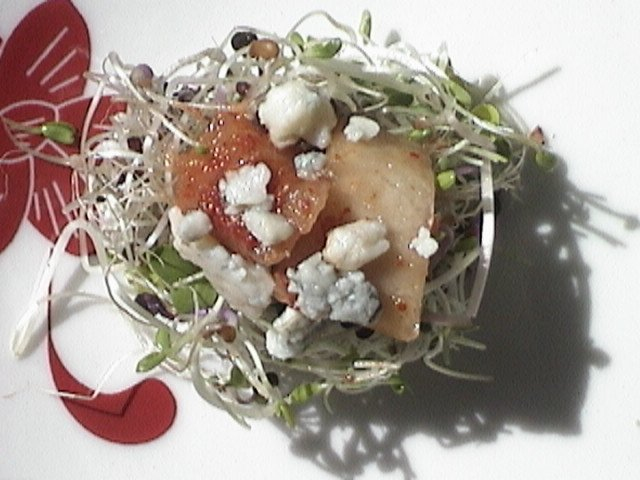
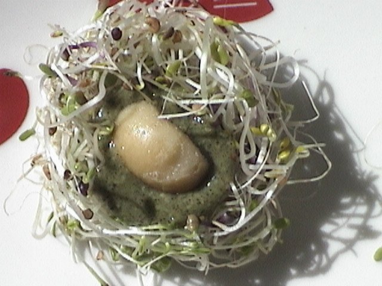
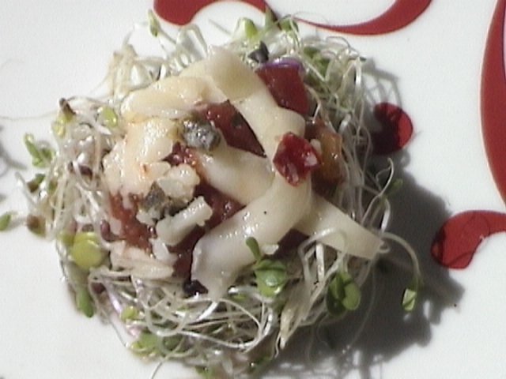
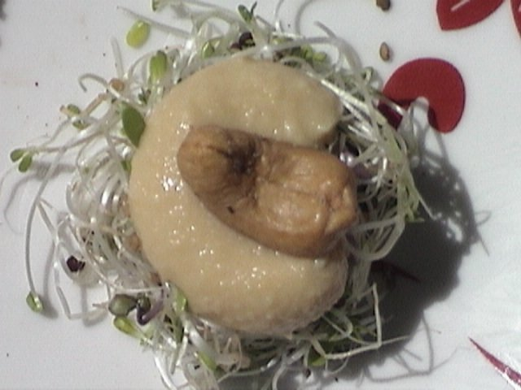
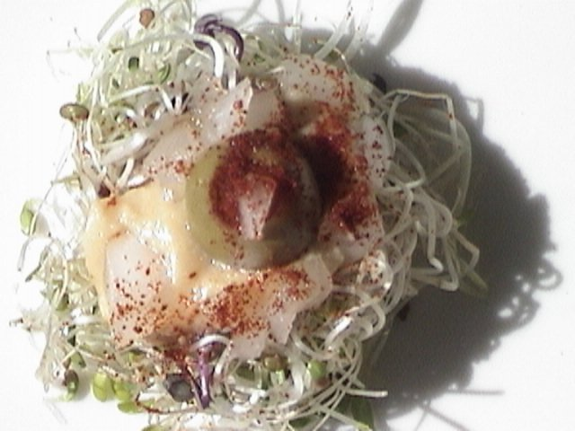
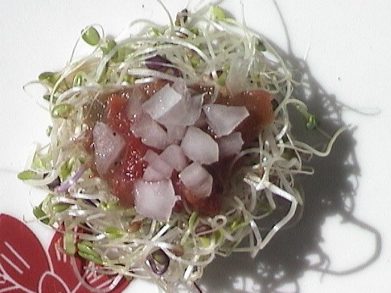

STUFFED SPROUTS
SPROUT NESTS
- FANTASTIC FIVE BLEND
- (ALFALFA, BROCCOLI, RED CABBAGE, CLOVER, RADISH)
SPROUT STUFFINGS
- HUMMUS, SALSA, GUACAMOLE, BABAGANOUSH, SOUR CREAM, YOGURT, HERBED CREAM CHEESE, BRUCHETTA, ANY NUT BUTTERS.
TOPPINGS
- SEEDS, NUTS, FRESH CHOPPED HERBS, FRESH CHOPPED VEGETABLES, ANY CHEESE, OLIVES, CAPERS, ROASTED GARLIC, PICKLE RELISH, HOT SAUCE, KIMCHI.
REMOVE SPROUTS FROM CONTAINER AND PLACE IN A LARGE BOWL TO SEPERATE. PLACE APPROXMATLY ONE HALF OF A HANDFUL IN ONE PALM AND GENTLY ROLL THE SPROUTS INTO A BALL WITH BOTH HANDS. AFTER ABOUT TEN ROLLS IN ONE DIRECTION, REVERSE THE ROLL PROCEDURE IN THE OTHER DIRECTION FOR ANOTHER TEN ROLLS. THEN WITH YOUR THUMB OR PINKY FINGER MAKE AN INDENTATION IN THE BALL TO RESEMBLE A BIRD'S NEST. PLACE SPROUT NESTS ON A PLATE TO WORK ON THEM. FILL NESTS WITH YOUR CHOICES OF STUFFINGS AND TOPPINGS AS YOU LIKE. MOVE THE STUFFED SPROUTS AFTER ALL TOPPINGS ARE ON TO YOUR SERVING PLATTER. (USE LOW LIQUID STUFFINGS TO PREVENT JUICES FROM RUNNING).
NOTE: YUM!
SERVE WITHIN A FEW HOURS.